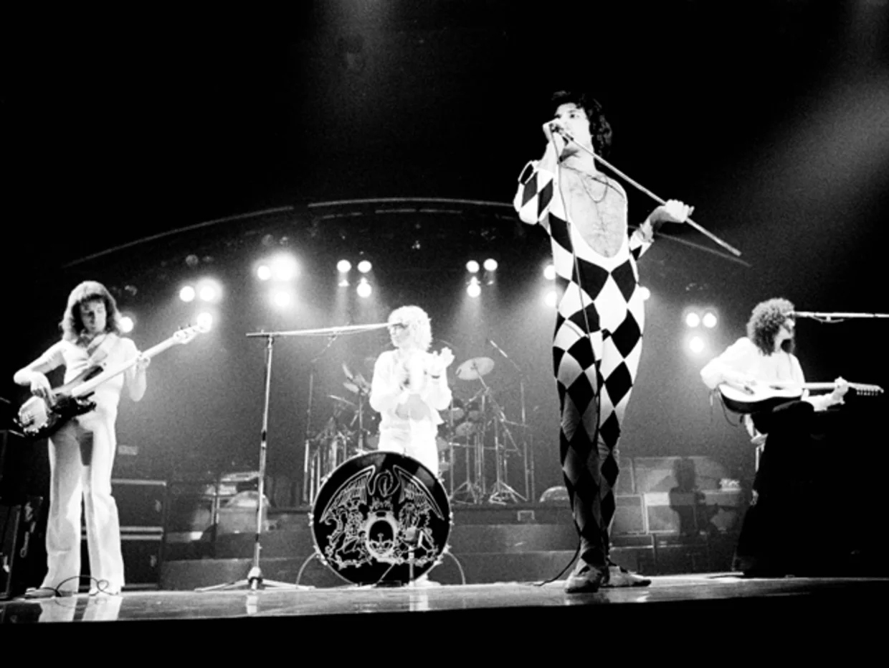

퀸(Queen)은 영국의 록 밴드이다. 1970년대 중반부터 1990년까지 주로 활동하였으며, 현재까지 세계적으로 많은 팬을 보유하고 있다. 국가별 판매량 인증 합산에 따르면 퀸은 세계적으로 통산 약 9천 6백만 장의 음반을 판매한 것으로 집계되었으며(역대 12위), 비공식 기록까지 합산한 추정 판매량은 1억 5천만 ~ 3억 5000만장에 이른다.
퀸은 아레나 록, 글램 록, 하드 록, 헤비 메탈, 프로그레시브 록 등 다양한 장르를 시도한 그룹이기도 하다. 퀸은 여러 후세 아티스트들에게 강한 영향을 미쳐 2001년에는 로큰롤 명예의 전당에, 2003년에는 최초이자 유일하게 한 명 한 명이 아닌 밴드의 단위로 작곡가 명예의 전당에 올랐으며 2004년에는 영국음악 명예의 전당, 2006년에는 VH1 채널의 록 아너스에 선정되었다. 퀸은 세계적으로 모두 합쳐 앨범차트 18회 1위, 싱글차트 18회 1위, DVD 판매순위 10회 1위를 기록했다.